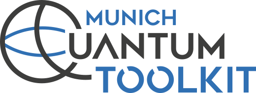
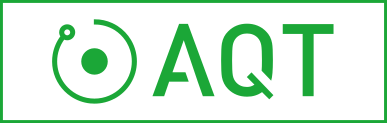
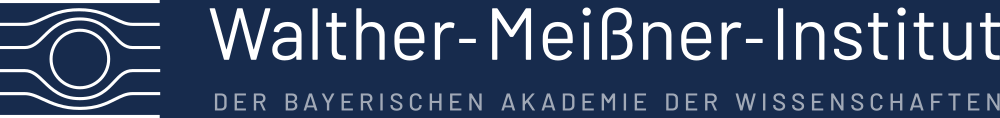

- Generated by
 1.18.0
1.18.0
|
QDMI v1.4.0
Quantum Device Management Interface
|
QDMI is an open, vendor-neutral, standardized interface for integrating quantum devices into classical software and infrastructure. Its international standardization effort brings together software developers, hardware providers, computing centres, and cloud services. The relationships below describe concrete deployments, implementations, and collaborative work; participation is open worldwide.
QDMI grew out of the Munich Quantum Valley initiative. It is used at the Leibniz Supercomputing Centre (LRZ) and Munich Quantum Valley gGmbH as part of the Munich Quantum Software Stack (MQSS). MQSS connects applications, compilation, resource management, and quantum devices. The MQSS publication describes the stack's architecture and its deployment at LRZ, including access to AQT and IQM systems.
The German FullStaQD consortium develops a reference architecture for the complete quantum software stack. Its building-block view selects QDMI's job and query interfaces for the reference implementation's boundary between the system and physical layers. This extends QDMI's role beyond the MQSS stack into national reference-architecture work.
QDMI participates in integration work around EuroHPC quantum systems and the European Quantum Systems and Software Summit (EQS3) working groups. It is being explored at European centres hosting quantum computers to connect quantum devices with HPC software and resource management. This work spans LRZ, the Poznań Supercomputing and Networking Center (PSNC), the Galicia Supercomputing Center (CESGA), CINECA, and VTT Technical Research Centre of Finland. CINECA and VTT host IQM systems, connecting these efforts to the hardware integration described below.
QDMI is being explored within the international open Quantum-HPC Software Ecosystem (openQSE) initiative hosted by Oak Ridge National Laboratory (ORNL). The openQSE survey examines QDMI among the interfaces relevant to interoperable quantum–HPC stacks and proposes a reference architecture.
A QDMI interface version defines the contract between a driver and device libraries. Implementations determine available devices, accepted program formats, authentication, results, and deployment options. Select compatible versions using each project's documentation and the QDMI compatibility guidance.
QDMI devices cover three kinds of execution target: hardware integrations, cloud access, and simulators. The following examples share the same interface while retaining their own capabilities and deployment requirements.
| System or Provider | QDMI integration |
|---|---|
| IQM | Hardware. QDMI-on-IQM connects to IQM systems for architecture and calibration queries and job execution. See the integration study and deployment guide. |
| Amazon Web Services (AWS) | Cloud access. The Amazon Braket QDMI device connects to gate-model QPUs and simulators through Amazon Braket. See the cloud integration study and configuration and deployment guides. |
| DDSIM | Simulator. The DDSIM QDMI device bundled with MQT Core executes quantum circuits locally using decision diagrams. Start with the executable simulator tutorial. |
| IBM Quantum | Hardware. The IBM QDMI device connects to IBM Quantum Platform. See its installation and integration guides. |
| AQT | Hardware. Trapped-ion hardware integration. |
| planqc | Hardware. Neutral-atom hardware integration. |
| Walther-Meißner-Institut (WMI) / Peak Quantum | Hardware. Superconducting hardware integration. |
| Eviden Qaptiva | Simulator. The Qaptiva QDMI device in the MQSS QDMI Devices Suite submits circuits to the Qaptiva emulator through myQLM. |
| MQSS at LRZ | Hardware access through MQSS. The LRZ QDMI device in the MQSS QDMI Devices Suite submits programs to configured MQSS resources through the MQSS client. |

DDSIM in MQT Core IBM Quantum Platform
AQT planqc
WMI Peak Quantum Eviden Qaptiva MQSS at LRZMQT Core connects applications, compilation, and infrastructure to QDMI devices. Its QDMI guides cover the following facilities:
| Component | Role in the stack |
|---|---|
| Driver | Loads QDMI device libraries and manages configured devices through the Client Interface. |
| C++ abstraction | Owning wrappers for sessions, devices, and jobs, with support for replaceable QDMI drivers. |
| Python bindings | Discover devices, query capabilities, submit programs, and retrieve results from Python. |
| Qiskit adapter | Provides a Qiskit backend for circuit execution through QDMI devices. |
| PennyLane adapter | Provides a PennyLane device for QDMI execution. |
| Slurm integration | Connects QDMI device access with HPC resource allocation and job workflows. |
| MQT Compiler Collection integration | Queries target capabilities and compiles compatible programs for subsequent submission through QDMI. |
JSON manifests, discovery helpers, bindings, SDK adapters, and scheduler integration are MQT Core facilities, not requirements of the QDMI interface. The compilation and execution guide explains how to combine them with a device such as DDSIM.
The public MQSS repositories provide device implementations and the surrounding software for compilation, execution, and HPC integration:
| Component | Role in the stack |
|---|---|
| QDMI Devices Suite | Qaptiva simulation, access to MQSS at LRZ, and DCDB telemetry queries. |
| Quantum Resource Manager and Compiler Infrastructure (QRM&CI) | Coordinates compilation, device selection, scheduling, and submission through QDMI. |
| Quantum Compilation Suite | MLIR compiler passes, including mapping that uses QDMI device information. |
| MQSS Client and adapters for Qiskit, PennyLane, and CUDA-Q | Application access to the MQSS compiler and runtime stack. |
| Scheduler | Quantum task scheduling, with an example QDMI submission pipeline. |
| Slurm Plugins Suite | Integration of quantum resources into Slurm jobs. |
| DCDB Daemon | Monitoring that collects device telemetry through QDMI for storage in InfluxDB. |
| Integration Deployment Framework | Communication between stack components in local and distributed HPC deployments. |
The MQV Component Catalogue provides an overview of the wider stack.
See Organization Artwork for logo sources and licenses.
QDMI supplies the interface at the device boundary. An installation combines it with a driver, device libraries, and the surrounding infrastructure:
| Responsibility | Where to start |
|---|---|
| Driver selection, device registration, and library loading | The architecture and MQT Core configuration guide |
| Provider endpoints, authentication, calibration, accepted programs, and results | The IQM, IBM, or Amazon Braket implementation guides linked above |
| Local execution and application bindings | MQT Core's simulator tutorial |
| HPC allocation, scheduling, and access policy | MQT Core's Slurm guide and the site's provider deployment guide |
| Implementing and validating a new device | The QDMI Device Interface, examples, template, and implementation smoke test |
Drivers and providers own configuration and credential handling. Site operators own allocation and access policies. QDMI does not prescribe a manifest format, secret store, or scheduler. A device library can serve a local simulator, a site-operated quantum system, or a remote cloud service; the same interface does not make their operational requirements identical.
QDMI was created jointly by TUM's Chair for Design Automation, TUM's Chair of Computer Architecture and Parallel Systems, and the Leibniz Supercomputing Centre within Munich Quantum Valley. The original QDMI paper records the motivation and early work.
Today, Munich Quantum Valley gGmbH and MQSC maintain QDMI with contributions from the wider community. We thank the original authors and all repository contributors for building and developing the interface.
Using or implementing QDMI? Open an issue or pull request to add your integration, deployment, or research project. Include a short description, its current status, and any public documentation or publication. For interface proposals, implementation feedback, and documentation contributions, see Contributing.
These publications address different parts of the ecosystem. They describe particular versions and deployments; use the headers and implementation guides for your selected version when writing software. In particular, the Braket paper describes QDMI 1.2; its API examples differ from the current interface.